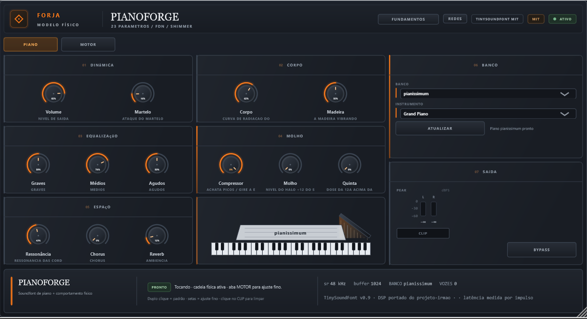
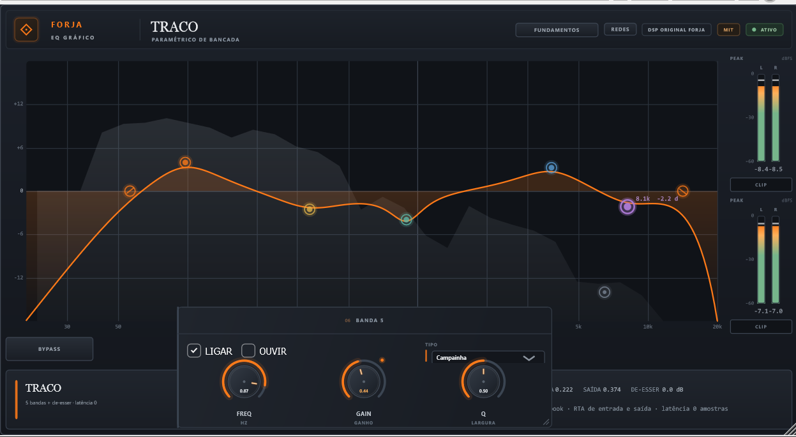

ForjaRack
disponívelOito gavetas em cadeia: encaixe módulos Airwindows e monte uma fileira completa sem sair de um único plug-in.
Ferramentas de estúdio feitas uma por uma, com a mesma interface de ferro e brasa: o rack de oito gavetas, os instrumentos de gaveta, o sampler de bateria e trinta e um plugins de mixagem derivados do código MIT de Chris Johnson (Airwindows). Windows, macOS e Linux, VST3.
De uma ambição pessoal de dar interface aos algoritmos da Airwindows a uma suíte completa de áudio.
A Forja começou despretensiosa: no início, a ideia era apenas criar interfaces visuais dignas para alguns dos plugins geniais da Airwindows (do lendário Chris Johnson). Graças ao vibecoding, o que era só um projeto de UI virou uma suíte completa de plugins — com DSP próprio como o ForjaRack, os Minis e o Drumforge ao lado dos adaptadores forjados — hoje com mais de 30 plugins, desenhados para ter um consumo de CPU incrivelmente baixo e fluidez total na sua DAW. Cada plugin é leve por construção: a suíte inteira roda fluida até em setups modestos, com dezenas de instâncias abertas sem engasgo.
Eu não sou programador profissional — sou um apaixonado por música, produção musical e tecnologia. Esse projeto inteiro só foi possível graças à metodologia de vibecoding e ao apoio de inteligência artificial de ponta, transformando conceitos, visão musical e princípios de áudio em código C++20 nativo de alta performance e rigor técnico.
Muitos dos plugins ainda estão em fases iniciais de desenvolvimento, mas absolutamente todos já estão muito usáveis e prontos para produção musical real. Não há artifícios lentos ou WebViews pesadas: são interfaces vetoriais nativas com identidade de ferro e brasa, acompanhadas do painel exclusivo FUNDAMENTOS em português para você saber exatamente o que cada botão faz no seu som.
Minhas redes o mesmo link do chip REDES que abre no topo de cada plugin.
Desenvolvidos em C++ puro com JUCE e zero alocação no caminho de áudio (RT-safe). São leves: notebooks e PCs modestos rodam dezenas de instâncias simultâneas sem suar.
Criado de fã para fãs de áudio. Prototipado, iterado e construído com vibecoding guiado por ouvidos e paixão pela mixagem.
Estáveis, com bypass musical sem cliques (crossfade de 10 ms), medição dinâmica e paridade matemática com os originais.
Cada linha tem trem de release próprio: os instaladores saem de tags separadas
(vrack-, vminis-, vdrumforge-, vairwindows-),
e a suíte continua saindo da tag sem prefixo.
Oito gavetas em cadeia: encaixe módulos Airwindows e monte uma fileira completa sem sair de um único plug-in.

Instrumentos de gaveta: player de soundfont, tocador de kits e saturador de válvula.

Sampler de bateria com dezesseis pads, round-robin e uma mesa completa.

Bons soundfonts de piano já existem; o corpo é que falta. O PIANOFORGE lê os seus e acrescenta o modelo físico.

EQ paramétrico de controle pelo gráfico: cortes de esquina, cinco bandas flexíveis e um de-esser na sexta, com RTA de entrada e saída atrás da curva.

Trinta e um plugins de mixagem derivados do código MIT de Chris Johnson, com interface Forja.
RACK SÉRIE 500
Oito gavetas em cadeia: encaixe módulos Airwindows MIT e monte uma fileira de timbre, dinâmica, EQ, ambiente e lo-fi sem sair de um único plug-in.
PLAYER SF2/SF3
CANIVETE é o player de soundfont da suíte: abre bancos .sf2 (e .sf3 quando o build traz o decodificador Ogg) e toca 16 canais GM pelo MIDI da DAW.

TOCADOR DE KITS
MINIDRUM é o Drumforge em formato de gaveta: puxa um kit da biblioteca compartilhada, toca o premix gravado no próprio arquivo e manda no nível com um único knob.

SATURADOR DE VÁLVULAS
MINISAT é a válvula do BRASA (Airwindows Tube2) em formato de gaveta: um único knob DRIVE leva o sinal do pad documentado ao sinal cheio, sem makeup gain e sem mesa de três knobs.
SAMPLER DE BATERIA
Dezesseis pads, camadas de velocidade, round-robin e uma mesa completa: o kit entra, o groove sai. Sem latência e sem depender de biblioteca externa.
PIANO DE AMOSTRAS + MODELO FÍSICO
Cansado de caçar o piano perfeito entre VSTs gratuitos, a descoberta é simples: existem bons soundfonts de piano — o que falta é o corpo do instrumento. O PIANOFORGE é um leitor de soundfont feito especificamente para pianos: você carrega o seu próprio .sf2 ou .sf3 e ele gera simulações físicas em tempo real — o transiente do martelo, a ressonância das cordas, o movimento da tampa, o corpo de madeira e o espaço — modificando o som para um piano mais realista e encorpado. Basta ler os seus soundfonts: eles já soam melhor.
EQ GRÁFICO ORIGINAL FORJA
TRACO é o EQ de bancada: cinco bandas que se desenham no gráfico, com cortes de esquina e um de-esser de verdade na sexta - e o espectro da entrada e da saída vivo atrás da curva.
EQUALIZADOR PARAMÉTRICO DINÂMICO
Cinzel é o equalizador paramétrico de três bandas com curvas largas e musicais: dá corpo, remove dureza e desenha a presença de uma fonte ou de um bus. As bandas trabalham sobre o sinal seco, então realces e cortes soam suaves — e a Forja acrescenta uma camada dinâmica opcional que só existe aqui: esculpe sem estourar.

EQUALIZADOR DE BUS
Lima é o equalizador de quatro bandas para bus e masterização: bandas largas separadas por crossovers suaves, com os ganhos aplicados depois do crossover — corrige sem criar artefatos de fase agressivos. Sem saturação nem coloração escondida: o ajuste que o bus inteiro aceita sem soar mexido.

SHELVES DE TOM
Torno é um EQ de tom de duas bandas — agudos e graves — com dois shelves Bessel entrelaçados e um estágio de Console: a inclinação musical para abrir ou encorpar uma fonte sem mexer no centro do espectro. O ganho de entrada empurra o Console e muda o timbre junto.

CLIPE DE PICO
Dique é a última comporta antes da saída: sem nenhum controle, arredonda picos extremos acima de +4,18 dBFS e deixa tudo abaixo passar intacto. Não é um limitador de 0 dBFS — isso é papel do Muralha; o Dique segura o que ainda passar do teto depois da cadeia.

DE-ESSER DINÂMICO
Escória é o de-esser de transientes: age sobre a diferença entre o sinal e uma versão filtrada dele e doma a dureza que viaja nos picos — sibilância, estalos de boca, chiado de pratos — sem comprimir a faixa inteira. Em voz, bateria e guitarra; em 0 o sinal passa intacto.

COMPRESSOR DE IMPACTO
Malho é o compressor de impacto: ataque e soltura separados, envelopes independentes por canal e um drive que coloca o sinal na frente. Segura o pico e devolve o som com presença, mantendo o transiente definido — feito para bateria, percussão e bus de rock onde o ataque precisa continuar existindo.

LIMITADOR ADAPTATIVO
Um muro no fim da cadeia: o sinal pode entrar quente, mas o pico sai contido. O ADClip9 adapta o clipe ao movimento do material em vez de usar um teto fixo.

COMPRESSOR VARI-MU
Prensa é um compressor de densidade: aperta o sinal de forma musical, escurece picos e aumenta a sensação de corpo. O detector é estéreo linkado e o comportamento, vari-mu — indicado para vocais, baixo, guitarra e bus onde se busca caráter, não transparência.

COMPRESSOR DE BUS
Têmpera é o compressor de cola: quatro compressores paralelos que se alternam a cada amostra unem os elementos do bus e arredondam transientes sem apagar o ataque. O movimento é suave e o caráter, musical — pensado para mix bus, bus de bateria e grupos onde o objetivo é união, não impacto.

SATURADOR DE VÁLVULA
Brasa é o modelador de válvula assimétrico — o Tube2 da Airwindows: acrescenta harmônicos de segunda e terceira ordem, comprime os picos de forma assimétrica e suaviza a transição entre eles. O sinal ganha peso harmônico e união sem perder o ataque, bom para vocais, graves e bus de mixagem.

ESPAÇO DE ECO
Eco não é um delay com um tempo: é uma sala inteira. O Echojam desenha dezessete espaços fixos, cada um com seu próprio conjunto de tempos de parede, e o Forja os expõe num só seletor. O atraso é musical, não compensação de latência.

AMBIENTE DE CLUBE
FÔLEGO é o ambiente de um clube de 272 lugares: reflexões iniciais curtas, corpo de seis vias por canal e dois estágios de subamostragem por Bézier. É o par pequeno do SALÃO. O atraso interno é musical, não compensação de latência.

DELAY DE FITA
Repique é o eco de uma máquina de fita: a cópia volta com o filtro do cabeçote, com a velocidade oscilando e com uma regeneração que vira ressonância quando o filtro aperta. O atraso é musical, não compensação de latência.

SALA GRANDE
SALÃO é uma sala de concerto, não um reverb de placa. O kRockstar2 junta reflexões iniciais curtas, um corpo de realimentação de seis vias por canal e um piso de ruído de sala. O atraso interno é musical: não há compensação de latência.

FITA DE ESTÚDIO
Laminar é passar o metal entre cilindros até ele ficar do jeito certo. Aqui, o cilindro é a fita: a entrada ganha corpo, o cabeçote reforça o grave e o flutter move a velocidade como uma máquina real.

FITA E LO-FI
Óxido de ferro é o que dá cor à fita. Aqui, ele é o grão: velocidade, flutter e ruído constroem a textura, e a mistura pode ir de só seco a só fita, inclusive invertida.

REDUTOR DE BITS
GRANALHA é o grão digital controlado: reduz a resolução da onda, redesenha os degraus em Bézier e deixa o brilho e os graves decidirem onde o lo-fi morde. É o bitcrusher da suíte, feito para sujar sem perder o corpo.

CALOR ASSIMÉTRICO
CERA derrete o sinal com uma curva assimétrica e devolve a diferença em derivadas: o resultado é calor de válvula sem perda de ataque. O ponto neutro é exatamente 0,50.

CORPO E GRAVES
CORPO é o ganho com forma: o Mojo empurra a onda para dentro de uma curva que engorda o sinal, dando peso e graves sem a aspereza de um drive comum.

COMPRESSÃO RÁPIDA
ÍMPETO é compressão sem envelope: a quarta potência do sinal vira a própria curva, então o pico é dobrado para dentro instantaneamente, sem ataque, release ou detector.

DRIVE LIMPO
LIXA é o drive de um só controle que não vira distorção: uma curva de seno arredonda os picos e a quantidade aplicada acompanha o próprio sinal. Serve para limpar transientes e dar cola sem chiado.

BRILHO SUAVE
MEL é o adoçador de topo: uma média curta do sinal ao quadrado é subtraída da entrada, arredondando picos e amaciar os agudos sem injetar harmônicos de exciter.

SUAVIZAÇÃO DE SLEW
REBARBA lima as arestas da onda: um preditor de três amostras estima o próximo passo e o limitador corta o que passa do limite. É o removedor de rebarba do sinal digital.

AMP CHIME
CHIME é o amp comprimido da família: cada banda tem seu próprio seguidor de envelope, então o ataque abre o som e o corpo sustenta. Serve para guitarras que precisam brilhar sem gritar.

BAIXO DE DOIS CAPTADORES
CRICK é um amp de baixo com dois caminhos de captador: o canal esquerdo e o direito passam por estágios de saturação e gabinetes diferentes, como um baixo com dois captadores no mesmo amp.

DI COMPRIMIDO
DELUXE é o DI da família: dez bandas fixas, dezesseis blocos de filtro em cascata e um seguidor de envelope por banda. O sinal sai comprimido, com ataque preservado e corpo no lugar.

GABINETE FASEADO
GABINETE é a cor do alto-falante sem distorção: dois filtros em cascata que fecham o topo e afinam o corpo, como um cone real em um recinto. Serve a guitarra, baixo ou voz.

TRANSFORMADOR DI
LOBO é um DI de transformador sem controles: dois preditores Kalman em série limpam e dão corpo ao sinal antes do amp, como um transformador de entrada bem escolhido.

AMP DE GUITARRA
PONTA é um amp de guitarra completo em um só plugin: pré com distorção, equalização de três bandas, gabinete e gate. Do sinal de entrada ao cone, sem pedais.

CHANNEL STRIP COMPLETO
Bigorna é o channel strip completo: EQ de três bandas com crossover ajustável, filtros passa-baixo e passa-alto, compressor estilo ButterComp e saída com ganho e saturação Spiral. Molda uma fonte de ponta a ponta em um só insert; o compressor só liga quando COMPRESSÃO passa de 0.

STRIP DE BUS
Cadinho é o strip de bus de quatro bandas — agudos, médio-alto, médio-baixo e graves — com um estágio dinâmico que segura a soma e um fader ClipOnly3 no fim do caminho. É o par de bus do Bigorna: onde o Bigorna molda uma fonte, o Cadinho equilibra a mistura inteira, do bus principal a um grupo.